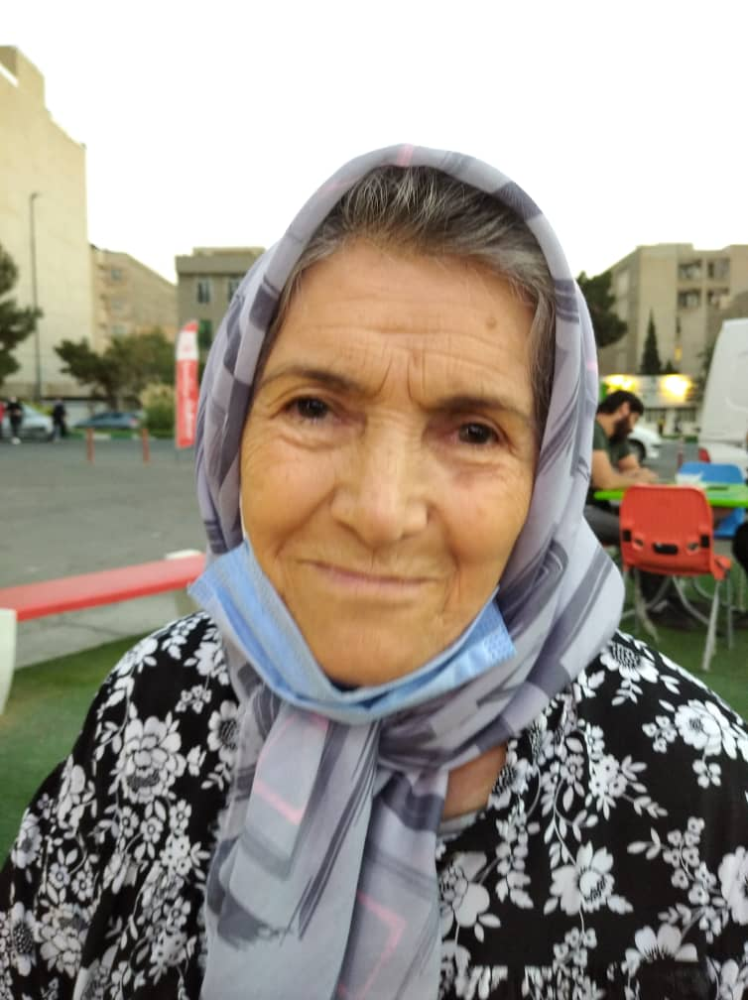
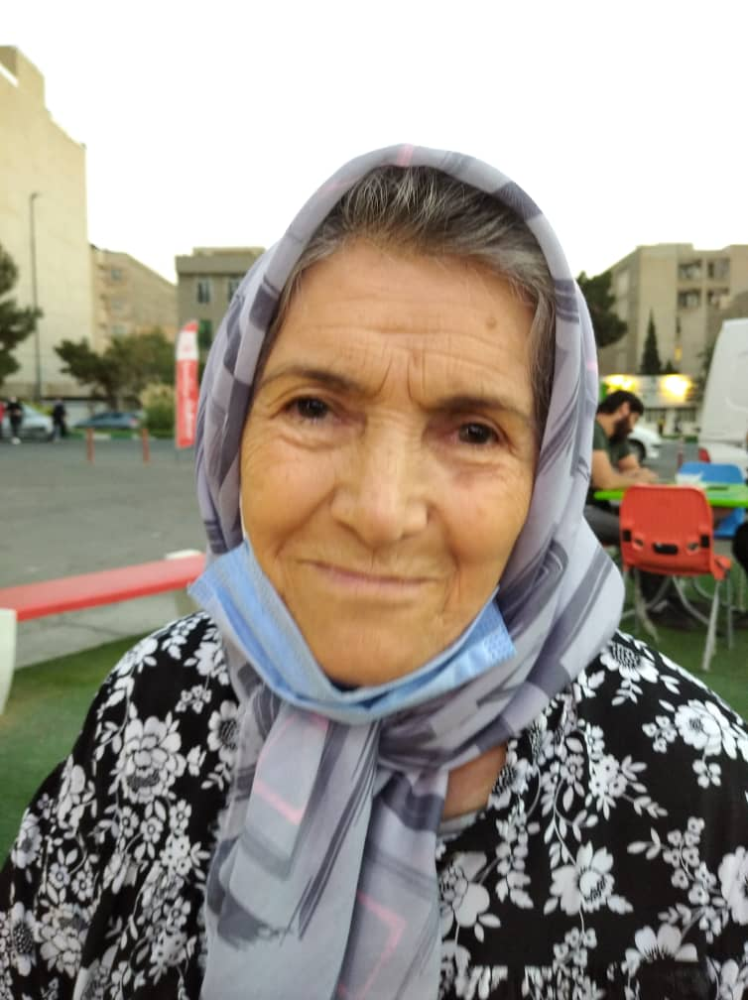

زندگینامه
نام و نام و خانوادگی : تقی مقدم
نام پدر:داداش علی
نام مادر : مدینه
نام همسر:خوشقدم مقدم
متولد : 1313/03/09 فوت : 1395/05/06
تعداد فرزند: 3 پسر و 3 دختر
مرحوم تقی مقدم در ال 1313در خانواده مذهبی ،در یکی از روستاهای (خرانسانلو) شهرستان خرمده به دنیا آمد ایشان فرزند چهارم خانواده بودند و دارای 3 برادر و یک خواهر می باشد که در حال حاضر فقط خواهر ایشان (فاطمه) در قید حیات می باشد در سن 18 سالگی به خواستگاری خوشقدم مقدم می رود و در سن 19 سالگی به خدمت وظیفه اقدام می کند ، بعد از اتمام دوره سربازی تنهایی به تهران مهاجرت می کند و مقدمات حضور خوشقدم مقدم را در تهران فراهم می سازد. 4 سال اول مهاجرت به تهران در خانه برادر همسر خود زندگی می کنند و در این مدت خداوند فرزند اول ایشان را(اسماعیل مقدم)راهدیه می دهد.بعد از گذشت مدتی خانه ای در مهرآباد جنوبی تهران تهیه کرد.ایشان در بدو ورود به تهران در شرکت نوشابه سازی ساسان استخدام می شود و تمام عمر کاری خود را در این شرکت سپری کرد و در نهایت بازنشته همین شرکت شد. ایشان در طول زندگی خود با توکل به خدا و سیداشهدا قدم به قدم در پیشرفت خانواده خود تلاش کرد و همیشه برای برپایی هیئت و مراسم مذهبی پیشتاز بود بعد از خرید خانه خداوند 6 فرزند به نام های ابراهیم - منوچهر - منیژه - مهدیس - رضا - مریم را به او اهدا کرد.هرچند در تهران زندگی می کرد اما همیشه از ته دل به کشاورزی و باغبانی علاقه داشت و در هر وضعیتی در خانه خود به این علاقه خود می پرداخت از ویژگی های معروف ایشان می توان به مذهبی بود ن کم حرف بودن مهربانی و سخاوت ایشان نام برد بعد از گذشت حدود 82 سال عمر به علت بیماری تنفسی چشم از جهان بست روحشون شاد.
علت فوت: بیماری تنفسی
نام و نام و خانوادگی : خوشقدم مقدم
نام پدر:اقا ولی
نام مادر : نسا
نام همسر:تقی مقدم
متولد :1321/05/15 فوت : 1400/10/25
تعداد فرزند: 3 پسر و 3 دختر
مرحوم حاجیه خانم خوشقدم مقدم در سال 1321 در روستای خراسانلو از توابع شهرستان خرمده زنجان به دنیا آمد ایشان فرزند آخر از 8 فرزند خانواده بودند که داری 3 خواهر و 3 برادر بودند 2 خواهر ایشان در سن پایین فوت کردند خانواده ایشان به عنوان کد خدا بودند در 10 سالگی به عقد حاج تقی مقدم در آمد و بعد از مدتی با ایشان به تهران مهاجرت کردند.به رسم مهمان نوازی همیشه مدت چندسال تمام افراد فامیل که قصد مهاجرت به تهران را داشتند در خانه ایشان می ماندند و این زوج مهربان همیشه حامی این افراد بودند.ایشان که فردی مذهبی بود در طول عمر خود 2 بار به خانه خدا و 4 بار به کربلا معلی و 3 بار به سوریه مو چندین بار به مشهد و قم مشرف شدند. ایشان بهشدت مهربان و به شدت عاشق فرزند های خود بود یکی از ویژگی های ایشان میتوان این مورد را نام برد که ایشان همیشه در حال آشتی دادن و از بین بردن کدورت ها بین فامیل و دوستان بودند.
علت فوت: بیماری قلبی